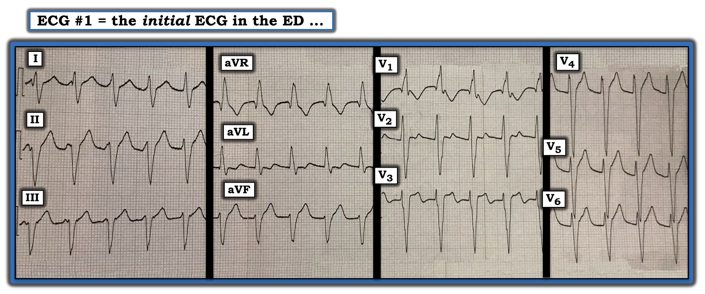
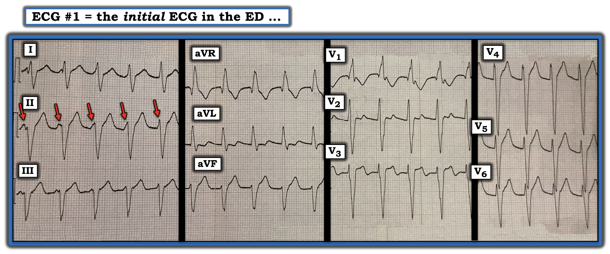

ECG Blog #335 — Có bằng chứng không?
Bạn được xem điện tâm đồ trong Hình-1 — và chỉ được biết rằng bệnh nhân là một người đàn ông 40 tuổi, ổn định huyết động.
CÂU HỎI:
- BẠN sẽ đọc bản ghi này như thế nào?
==============================
LƯU Ý: Đáng tiếc — không có dải nhịp chuyển đạo dài nào được ghi lại. Dù vậy — hóa ra dải nhịp chuyển đạo dài lại không cần thiết để chẩn đoán xác định.
==============================


Cách tiếp cận CỦA TÔI với điện tâm đồ ở Hình-1:
Như mọi khi – tôi thích bắt đầu việc đọc bằng cách đánh giá dải nhịp chuyển đạo dài — dùng Cách tiếp cận Ps, Qs & 3R để nhớ lại 5 Thông số CHÍNH (Xem ECG Blog 185). Tôi thấy dễ nhất (và hiệu quả nhất) là hoãn đánh giá điện tâm đồ 12 chuyển đạo cho đến sau khi đã có dịp xem xét nhịp.
- Nhịp nhanh và đều (dù không hẳn nhanh như người ta có thể nghĩ khi mới nhìn qua = khoảng 115/phút). QRS rộng. Không thấy sóng P xoang đều được dẫn truyền (tức là không có sóng P dương với khoảng PR hằng định và bình thường đứng trước mỗi phức bộ QRS ở chuyển đạo II).
Chúng ta đã mô tả gì về nhịp ở Hình-1?
Chúng ta đã mô tả một nhịp WCT ( = nhịp nhanh QRS rộng — Wide-Complex Tachycardia) đều với tần số ~115/phút — nhưng không có dấu hiệu rõ ràng của sóng P xoang dẫn truyền bình thường.
- ĐIỂM THEN CHỐT (PEARL) #1: Như thường được nhấn mạnh trên các bài ECG Blog này — nguyên nhân thường gặp nhất (vượt xa các nguyên nhân khác!) của một nhịp WCT đều không có sóng P xoang dẫn truyền là VT (nhịp nhanh thất — Ventricular Tachycardia). Tùy theo hoàn cảnh lâm sàng của ca đang xét — khoảng 80-đến-90+% các nhịp như vậy rốt cuộc sẽ là VT. Vì lý do đó — LUÔN LUÔN giả định là VT cho đến khi chứng minh được điều ngược lại!
- ĐIỂM THEN CHỐT (PEARL) #2: Nổi bật trong số các đặc điểm điện tâm đồ có thể giúp chẩn đoán một WCT đều — là hình dạng QRS. Nghiêng về VT NẾU — hình dạng QRS không giống bất kỳ dạng rối loạn dẫn truyền đã biết nào (tức là LBBB hoặc RBBB, có hoặc không kèm blốc phân nhánh). Đây là trường hợp của điện tâm đồ ở Hình-1. Mặc dù dạng qR chủ yếu dương ở chuyển đạo V1, cùng sóng S tận rộng ở chuyển đạo V6, giống dẫn truyền kiểu RBBB (blốc nhánh phải — Right Bundle Branch Block) ở các chuyển đạo trước ngực — nhưng trục mặt phẳng trán không xác định (tức là các chuyển đạo I,II,III đều chủ yếu âm) lại không điển hình cho dẫn truyền kiểu RBBB ở các chuyển đạo chi. Dù vậy — tôi cho rằng hình dạng QRS ở điện tâm đồ #1 rõ ràng không đủ để khẳng định nguồn gốc thất.
- LƯU Ý: Để xem lại "Quan điểm của tôi" về cách tiếp cận điện tâm đồ nhằm đánh giá nhịp WCT đều — hãy xem ECG Blog #196 — Blog #220 — Blog #263 — và Blog #283 —
THỬ THÁCH:
Quay lại ca hôm nay — có 1 đặc điểm điện tâm đồ gần như khẳng định VT ở Hình-1. Đó có thể là gì?
- GỢI Ý: Hãy NHÌN LẠI điện tâm đồ ở Hình-1. TẠI SAO hình dạng QRS ở chuyển đạo II có thể thay đổi?
TRẢ LỜI:
- Xem Hình-2 ...


Tại sao hình dạng QRS ở chuyển đạo II thay đổi:
Có 5 mũi tên ĐỎ trong Hình-2. Các mũi tên này biểu thị hoạt động nhĩ — thấy rõ nhất dưới mũi tên ĐỎ thứ 1 — thấy được một phần dưới 3 mũi tên ĐỎ tiếp theo (vì các sóng P này làm biến dạng phần đầu của phức bộ QRS) — và gần như bị che lấp hoàn toàn trong QRS dưới mũi tên ĐỎ cuối cùng.
- ĐIỂM THEN CHỐT (PEARL) #3: Việc vị trí của 5 sóng P được các mũi tên ĐỎ này đánh dấu dịch chuyển liên tục so với phức bộ QRS kế bên — cho chúng ta biết các sóng P này không liên quan đến các phức bộ QRS (tức là có phân ly nhĩ thất (AV dissociation) hoàn toàn ở 5 nhát này). Dấu hiệu phân ly nhĩ thất hoàn toàn giữa một nhịp nhĩ đều và nhịp nhanh QRS rộng (ít nhất trong một phần đáng kể của nhịp WCT) này — gần như chẩn đoán VT (Xem ECG Blog #133 — Blog #134 — và Blog #151 để xem thêm các ví dụ minh họa cách phân ly nhĩ thất giúp bạn xác nhận chẩn đoán VT!).
- ĐIỂM THEN CHỐT (PEARL) #4: Mặc dù dấu hiệu phân ly nhĩ thất trên điện tâm đồ hỗ trợ vô giá cho việc xác nhận chẩn đoán VT — dấu hiệu này thường không thấy được ở những dạng VT khó nhất (tức là những VT xảy ra ở tần số tim nhanh hơn). Đó là vì tần số thất của VT càng nhanh — thì các sóng P xoang nền càng dễ bị che khuất (tức là nằm trong các phức bộ QRS hoặc trong sóng ST-T). Chính vì tần số thất của nhịp WCT trong ca hôm nay tương đối chậm (tức là chỉ ~115/phút) — mà chúng ta có thể nhận ra phân ly nhĩ thất ở 5 sóng P được đánh dấu bằng các mũi tên ĐỎ trong Hình-2 (Lưu ý rằng chúng ta không thấy bằng chứng phân ly nhĩ thất ở phần còn lại của bản ghi hôm nay).
- ĐIỂM THEN CHỐT (PEARL) #5: Theo kinh nghiệm của tôi — phân ly nhĩ thất bị chẩn đoán quá mức rất nhiều! Có xu hướng gán nhãn "phân ly nhĩ thất" cho bất kỳ (và đôi khi là tất cả) các sóng lệch bất thường nhìn thấy trên một bản ghi WCT. Phần lớn trường hợp (theo kinh nghiệm của tôi) — những sóng lệch "thêm" này không phải là sóng P nền — mà thực ra phản ánh nhiễu, vốn rất thường gặp ở bệnh nhân có triệu chứng với nhịp nhanh rõ rệt. Vì ý nghĩa lâm sàng của việc nhận ra phân ly nhĩ thất thật sự trong một nhịp WCT đều (tức là nó gần như chứng minh nhịp đó là VT!) — tôi chủ trương chỉ chẩn đoán phân ly nhĩ thất khi bạn có thể chắc chắn là nó có mặt (tức là khi bạn có thể nhận ra một cách đáng tin cậy ít nhất một chuỗi sóng P nền đều với tần số hằng định — như có thể làm được với 5 mũi tên ĐỎ liên tiếp thấy trong Hình-2).
- ĐIỂM THEN CHỐT (PEARL) #6: Như tôi đã nhấn mạnh — tần số của nhịp WCT đều trong bản ghi hôm nay không nhanh. Tần số là ~115/phút — nằm ở ranh giới giữa một dạng VT "chậm hơn" = AIVR (nhịp tự thất gia tốc — Accelerated IdioVentricular Rhythm — thường lành tính và liên quan đến tái tưới máu) — và một nhịp VT "nhanh hơn" (với nguy cơ cao hơn nhiều chuyển thành rung thất (VFib) và ngừng tim). Do đó — ý nghĩa lâm sàng của nhịp hôm nay sẽ tùy thuộc vào tình trạng ổn định huyết động của bệnh nhân — và — vào các yếu tố lâm sàng, chẳng hạn liệu nhịp này có phải là một dấu hiệu tích cực (và thoáng qua) cho thấy động mạch "thủ phạm" vừa được tái tưới máu hay không. ĐIỂM CHÍNH: Tùy vào các yếu tố này — nguy cơ nhịp hôm nay chuyển thành VFib và ngừng tim có thể là hạn chế — và sốc điện chuyển nhịp hay điều trị chống loạn nhịp có thể không nhất thiết cần đến (Xem ECG Blog #108 và Blog #125 để biết thêm về AIVR).
DIỄN TIẾN CA BỆNH:
Thông tin diễn tiến tôi có về ca hôm nay còn hạn chế. Tôi biết rằng bệnh nhân này vừa bị nhồi máu cơ tim (MI) gần đây — điều này gợi ý rằng nhịp ở Hình-2 có thể là AIVR xuất hiện do tái tưới máu mạch vành. Đáng tiếc — tôi không có xác nhận về điều này.
- Khi không có thêm thông tin lâm sàng — tôi sẽ coi cách đọc tối ưu cho nhịp hôm nay = "Nhịp nhanh thất với tần số 115/phút".
- Tôi muốn nhấn mạnh sự cần thiết phải đối chiếu lâm sàng để xác định LIỆU điều trị chống loạn nhịp, sốc điện chuyển nhịp — hay — "để thời gian giải quyết" (tức là không điều trị tích cực) mới là cách tiếp cận TỐT NHẤT để xử trí ban đầu.
==================================
Lời cảm ơn: Xin cảm ơn Ahmed Shaaban (từ Cairo, Ai Cập) đã chia sẻ ca bệnh và bản ghi này.
==================================
Các bài ECG Blog liên quan đến ca hôm nay:
- ECG Blog #205 — Ôn lại Cách tiếp cận hệ thống của tôi trong đọc điện tâm đồ 12 chuyển đạo.
- ECG Blog #185 — Ôn lại Cách tiếp cận hệ thống của tôi trong đọc nhịp.